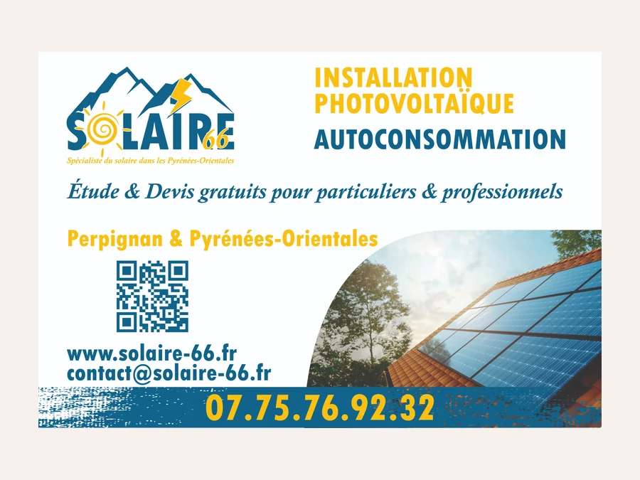
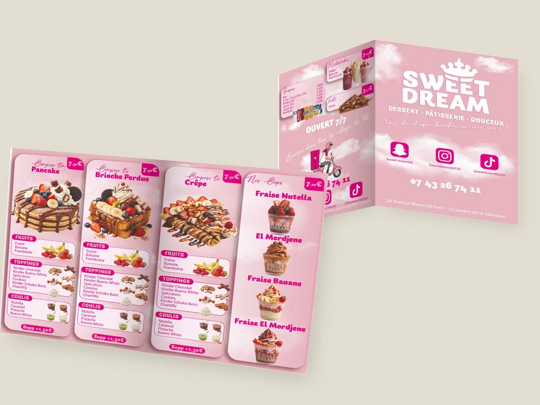
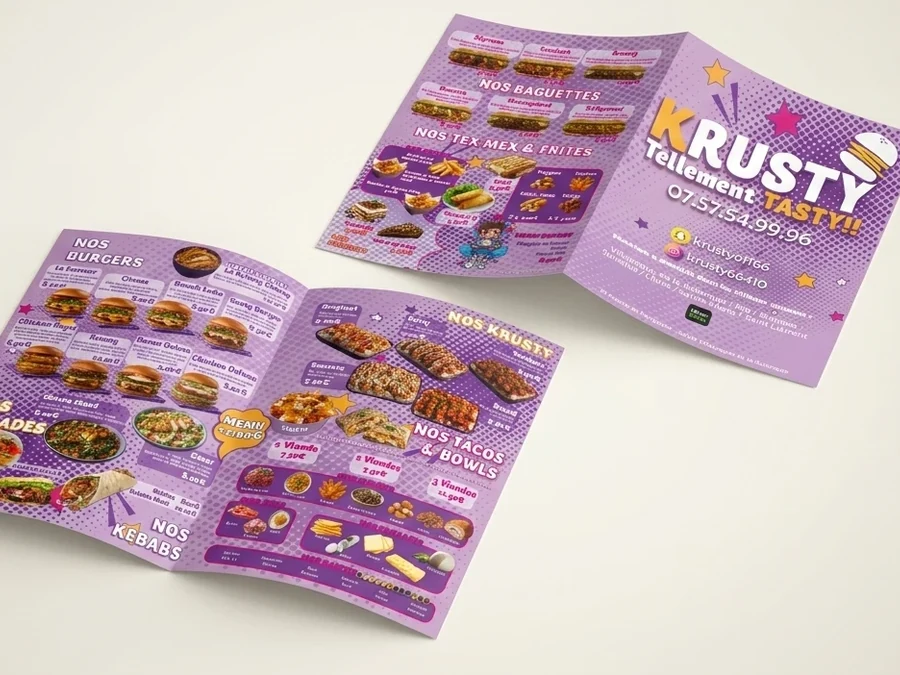
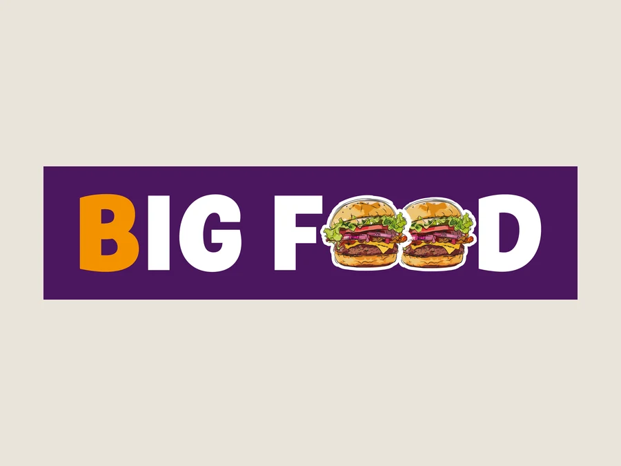
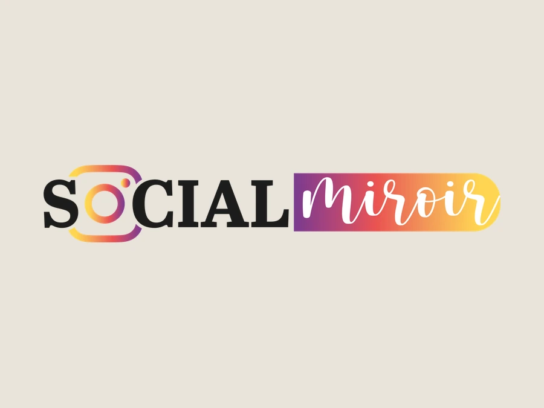
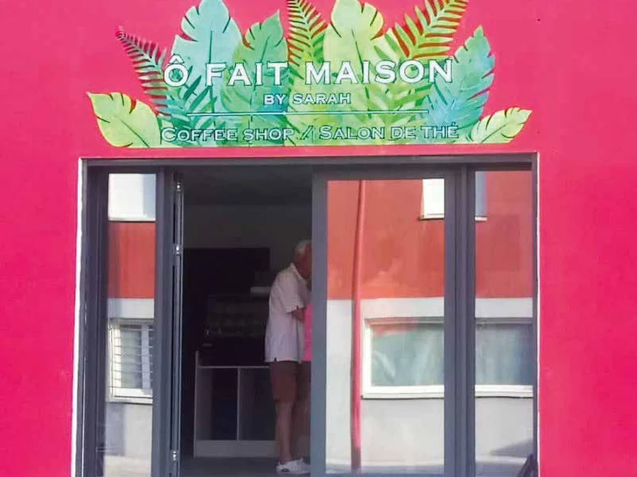
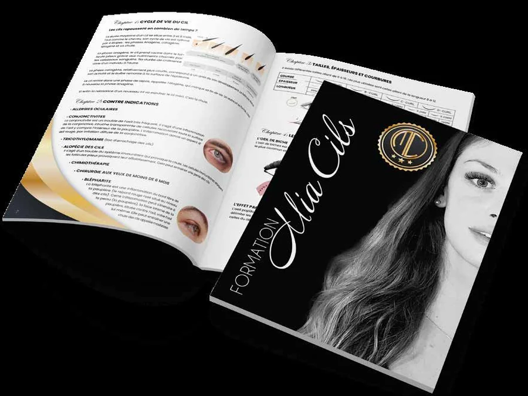

Identité
Solaire 66
Logo, cartes de visite et panneau de chantier. Le même dessin tient des 8,5 cm de la carte aux 120 cm du panneau — c'est ce qui se vérifie avant de livrer, pas après.
Chaque projet part d'une page blanche et d'une conversation. Voici une sélection de travaux et, pour chacun, ce qu'il fallait résoudre.

Logo, cartes de visite et panneau de chantier. Le même dessin tient des 8,5 cm de la carte aux 120 cm du panneau — c'est ce qui se vérifie avant de livrer, pas après.

Logo et dépliant de menu pour un salon de desserts. Le relief des lettres ne vient pas d'un dégradé mais d'une ombre décalée : deux encres suffisent, et ça passe partout.

Logo et dépliant de menu. Les lettres sont creuses, blanches cernées de violet — c'est ce qui les laisse vivre sur un fond chargé de photos comme sur un fond clair.

Logo seul, décliné sur une ligne et sur deux. Les deux O du mot sont des burgers : l'objet remplace la lettre au lieu de s'ajouter à côté.

Logo décliné en trois versions : ronde, carrée, en long. La ronde n'est pas la carrée recadrée — la bande du nom y est allongée de trois centimètres pour rejoindre le cercle, sinon l'avatar laisse deux vides sur les côtés.

Enseigne de devanture d'un salon de thé, et la décoration intérieure qui lui répond.
Création de Sandra, fondatrice de Grafycom — projet réalisé au sein d'une précédente structure.

Livret de formation : couverture, mise en page et gabarit des pages intérieures.
Création de Sandra, fondatrice de Grafycom — projet réalisé au sein d'une précédente structure.
De vrais témoignages, laissés par des clientes avec qui le contact est resté. Pas de phrases inventées pour faire joli : s'il n'y en a que trois, c'est qu'il n'y en a que trois.
J'ai adoré l'accueil, l'écoute et le professionnalisme. Sandra comprend tout de suite ce que vous voulez. Je la recommande vivement : mon coffee shop a été mis en avant avec sa créativité, et maintenant mes bougies artisanales aussi.
Sarah Otman
Ô Fait Maison
Sandra et son équipe mettent la notion de « service client » au cœur de leurs prestations : des conseils avisés, des délais tenus, et un travail de qualité à la hauteur de vos attentes. Je vous recommande vivement de leur confier la communication de votre entreprise.
Ludivine Le Blay
La Casquette Bleue
Je travaille avec Sandra depuis plus de cinq ans. Je suis ravie de leurs prestations : rapidité, efficacité, tarifs abordables. J'ai toujours une mission à leur confier. Je recommande les yeux fermés !
Jade Lopez
Mia Beauty
Ces avis ont été laissés à l'époque de la structure précédente, et sont repris ici avec l'accord de leurs autrices.
Certains travaux — packagings en cours de lancement, refontes pas encore annoncées, dossiers internes — ne sont pas publiables. Je peux vous les montrer lors d'un rendez-vous, avec l'accord du client concerné.
Racontez-moi ce que vous avez en tête. Le premier échange est gratuit, et je vous dis franchement si je suis la bonne personne pour le faire.